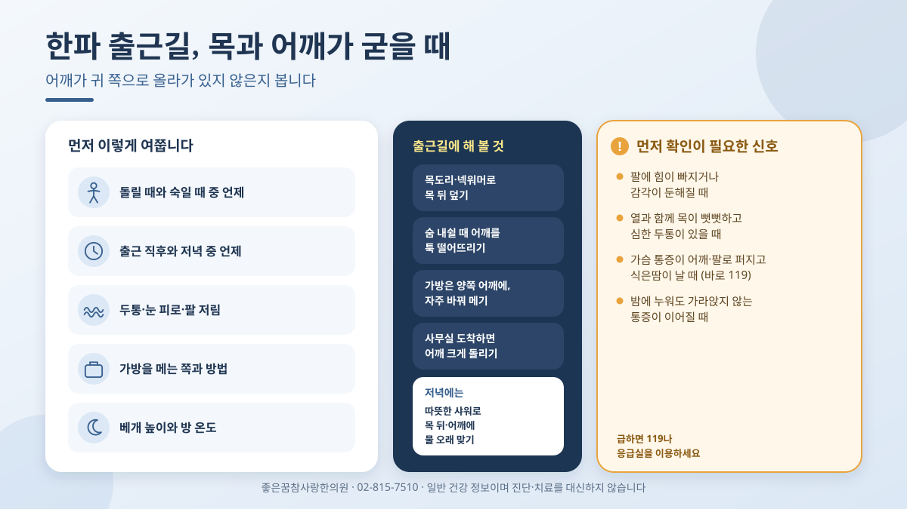

이종호 한의사 감수좋은꿈참사랑한의원 대표원장 (한의사 면허번호 19769)발행 2026-11-25 · 수정 2026-11-25
이 글의 차례
한파에 출근한 날 목과 어깨가 굳는다면, 먼저 목을 따뜻하게 감싸고 어깨가 귀 쪽으로 올라가 있지 않은지 살피는 것이 좋습니다. 찬바람이 불면 누구나 고개를 숙이고 어깨를 움츠리게 되는데, 상도역까지 걸어 내려가는 십여 분 동안 이 자세가 이어지면 사무실에 도착했을 때 이미 목이 뻣뻣합니다.
대개 몸을 녹이고 자세를 바꾸면 하루 이틀 사이 덜해지는 흐름을 보이지만, 팔 저림이나 힘 빠짐이 함께 있다면 지켜보기보다 확인이 먼저입니다.
예를 들어 아침 일곱 시 반, 영하의 바람 속에서 한 손은 주머니에, 한 손은 휴대폰을 든 채 고개를 숙이고 걷는 모습을 떠올려 보세요. 이때 어깨는 평소보다 손가락 두 마디쯤 올라가 있습니다. 노량진역에서 환승 계단을 오르내리며 무거운 가방을 멘 출근길도 비슷합니다.
왜 이런 불편이 생길 수 있나요
- 추우면 몸이 열을 지키려고 어깨와 목 주변 근육에 힘이 들어가기 쉽습니다.
- 두꺼운 외투와 무거운 가방이 어깨를 아래로 당깁니다.
- 주머니에 손을 넣고 고개를 숙여 걷는 자세가 목 뒤를 오래 당깁니다.
- 실내외 온도 차가 커서 드나들 때마다 몸이 다시 움츠러듭니다.
- 실내에 들어와서도 굳은 자세 그대로 앉아 일하면 풀릴 틈이 없습니다.
- 해가 짧고 추운 날이 이어지면 바깥에서 몸을 움직이는 시간 자체가 줄어들기 쉽습니다.
- 한의학에서는 찬 기운에 목과 어깨가 굳는 것을 몸 전체가 찬 정도, 잠과 피로와 함께 묶어서 살핍니다.
먼저 이렇게 여쭙니다
- 목을 돌릴 때와 숙일 때 중 언제 더 불편한가요?
- 아침 출근 직후와 저녁 중 언제 더 뻣뻣한가요?
- 두통이나 눈의 피로, 팔 저림이 함께 있나요?
- 가방은 어느 쪽 어깨에 어떻게 메나요?
- 추위를 많이 타고 손발이 찬 편인가요?
- 잘 때 베개 높이와 방 온도는 어떤가요?

일상에서 먼저 해 볼 수 있는 것
- 목도리나 넥워머로 목 뒤를 덮고 나서기
- 장갑을 끼고 손을 주머니에서 꺼내 팔을 자연스럽게 흔들며 걷기
- 언덕길을 내려갈 때는 휴대폰을 넣고 시선을 앞에 두기
- 걸으면서 숨을 내쉴 때 어깨를 한 번씩 툭 떨어뜨리기
- 가방은 양쪽 어깨에 메거나 자주 바꿔 메기
- 사무실에 도착하면 겉옷을 벗고 어깨를 크게 돌려 풀기
- 모니터 위쪽을 눈높이에 맞추고 50분에 한 번 가슴을 펴기
- 따뜻한 물로 샤워하며 목 뒤와 어깨에 물을 오래 맞기
- 잘 때는 목이 이불 밖에서 식지 않게 하고, 베개는 목의 곡선을 받쳐 주는 높이로 맞추기
상황별 예시
- 예를 들어 상도동 언덕길을 걸어 내려가 지하철로 출근하는 직장인의 경우, 걷는 동안 움츠린 어깨가 붐비는 지하철에서 손잡이를 잡은 채 그대로 굳고, 도착하자마자 모니터 앞에 앉게 됩니다. 도착 뒤 겉옷을 벗고 2~3분 어깨를 돌리는 시간을 출근 일과에 넣어 볼 수 있습니다.
- 예를 들어 노량진 학원가로 아침 일찍 나서는 수험생이 무거운 책가방을 메고 찬바람을 맞으며 걷고, 하루 종일 고개를 숙여 공부하는 경우 목 뒤 뻐근함과 두통이 함께 올 수 있습니다. 가방 무게를 줄이고 50분 공부에 한 번 일어나 목을 천천히 돌려 봅니다.
- 예를 들어 이른 아침 산책이나 장보기를 하시는 어르신이 한파 속에서 몸을 잔뜩 웅크리고 걸은 경우, 목과 어깨뿐 아니라 걸음이 조심스러워지며 허리까지 뻣뻣해질 수 있습니다. 해가 오른 뒤 나서고, 목도리와 장갑으로 몸을 덮어 움츠림을 줄여 봅니다.
스스로 점검해 보세요
- 걸을 때 어깨가 귀 쪽으로 올라가 있지 않은지 유리창에 비친 모습으로 확인해 보았다.
- 목을 좌우로 돌릴 때 한쪽만 더 걸리는지 비교했다.
- 가방 무게와 주로 메는 쪽을 확인했다.
- 두통, 눈의 피로, 팔 저림이 함께 있는 날을 표시했다.
- 출근 직후와 퇴근 무렵 가운데 언제 더 뻣뻣한지 적어 보았다.
- 따뜻한 샤워 뒤에 뻣뻣함이 덜한지 살폈다.
얼마나 지켜보고 언제 상담할까요
- 목을 따뜻하게 하고 출근길 자세를 바꾸면서 하루 이틀 사이 덜해지는 흐름이라면 생활 관리를 이어 가며 지켜볼 수 있습니다.
- 일주일 넘게 아침마다 목이 잘 돌아가지 않거나, 추운 날마다 두통이 따라온다면 진료에서 목 주변의 긴장과 자세를 함께 확인해 보시길 권합니다.
- 두 주가 지나도 줄지 않거나 밤에 누워도 아프다면 더 미루지 않습니다.
- 팔에 힘이 빠지거나, 가슴 통증이 어깨와 팔로 퍼지며 식은땀이 난다면 기다리지 말고 바로 응급실로 갑니다.

한의원에서 함께 살필 수 있는 경우
- 추워질 때마다 목과 어깨가 굳고 두통이 따라오는 경우 목 주변의 긴장과 자세를 함께 살핍니다.
- 한쪽 어깨만 유독 뭉치는 경우 가방 메는 습관과 앉는 자세를 함께 살핍니다.
- 팔이나 손가락이 저린 경우 목에서 내려오는 불편인지 함께 확인합니다.
좋은꿈참사랑한의원에서는 첫 방문 때 출근길 동선과 걷는 시간, 가방 무게, 하루 중 가장 뻣뻣한 시간대를 먼저 듣고 맥부터 짚어 봅니다. 그다음 목을 돌리고 숙이고 젖히는 움직임과 어깨 높이, 팔의 힘과 저림을 확인하고, 필요하다고 판단될 때 아픈 곳과 주변을 눌러 보거나 초음파로 살핍니다.
상태에 맞춰 침·약침·추나 등을 정하고, 귀가 전에는 출근길과 사무실에서 해 볼 자세, 집에서 지켜볼 점과 다음에 확인할 일을 알려 드립니다.

이렇게 기록해 오시면 상담이 쉬워집니다
- 가장 뻣뻣한 시간대와 아픈 정도(0~10)
- 불편한 동작(고개 돌리기, 숙이기, 팔 들기)
- 출근 시간과 가방 무게, 메는 방법
- 출근길에 걷는 시간과 오르내리는 계단·언덕
- 추위를 느끼는 정도와 손발이 찬지
- 두통이나 팔 저림이 있었던 날
이런 증상은 먼저 확인이 필요합니다
- 팔에 힘이 빠지거나 감각이 둔해지는 경우
- 열과 함께 목이 뻣뻣하고 심한 두통이 있는 경우
- 가슴 통증이 어깨와 팔로 퍼지고 식은땀이 나는 경우(바로 응급실)
- 밤에 누워도 가라앉지 않는 통증이 이어지는 경우
복용 중인 진통제나 다른 약은 처방한 의사와 상의 없이 줄이거나 끊지 않습니다. 다친 뒤 시작된 심한 통증과 붓기는 영상 검사가 가능한 의료기관 확인이 먼저이며, 급하면 응급실을 이용하세요.
함께 읽으면 좋은 글
- 찬바람을 맞은 아침에 이마와 뒷목이 조이듯 아픈 두통은 어떻게 살피나요?
- 두꺼운 패딩에 무거운 가방까지 메는 겨울에 어깨가 처지고 아프면 어떻게 살피나요?
- 어깨가 둥글게 말리면 왜 목 뒤가 계속 뻐근할까요?

여쭙는 것
- 목을 돌릴 때와 숙일 때 중 언제 더 불편한가요?
- 아침 출근 직후와 저녁 중 언제 더 뻣뻣한가요?
- 두통이나 눈의 피로, 팔 저림이 함께 있나요?
생활에서 해 볼 것
- 목도리나 넥워머로 목 뒤를 덮고 나서기
- 장갑을 끼고 손을 주머니에서 꺼내 팔을 자연스럽게 흔들며 걷기
- 언덕길을 내려갈 때는 휴대폰을 넣고 시선을 앞에 두기
한의원에서 함께 살필 것
- 추워질 때마다 목과 어깨가 굳고 두통이 따라오는 경우 목 주변의 긴장과 자세를 함께…
- 한쪽 어깨만 유독 뭉치는 경우 가방 메는 습관과 앉는 자세를 함께 살핍니다.
- 팔이나 손가락이 저린 경우 목에서 내려오는 불편인지 함께 확인합니다.
먼저 확인이 필요한 신호
- 팔에 힘이 빠지거나 감각이 둔해지는 경우
- 열과 함께 목이 뻣뻣하고 심한 두통이 있는 경우
- 가슴 통증이 어깨와 팔로 퍼지고 식은땀이 나는 경우(바로 응급실)
한눈에 보는 표
| 구분 | 핵심 |
|---|---|
| 여쭙는 것 | 목을 돌릴 때와 숙일 때 중 언제 더 불편한가요? 아침 출근 직후와 저녁 중 언제 더 뻣뻣한가요? |
| 생활에서 해 볼 것 | 목도리나 넥워머로 목 뒤를 덮고 나서기 장갑을 끼고 손을 주머니에서 꺼내 팔을 자연스럽게 흔들며 걷기 |
| 한의원에서 함께 살필 것 | 추워질 때마다 목과 어깨가 굳고 두통이 따라오는 경우 목 주변의 긴장과 자세를 함께 살핍니다. 한쪽 어깨만 유독 뭉치는 경우 가방 메는 습관과 앉는 자세를 함께 살핍니다. |
| 먼저 확인이 필요한 신호 | 팔에 힘이 빠지거나 감각이 둔해지는 경우 열과 함께 목이 뻣뻣하고 심한 두통이 있는 경우 |
자주 묻는 질문
목을 우두둑 소리 나게 돌려도 되나요?
세게 꺾는 동작은 권하지 않습니다. 아프지 않은 범위에서 천천히 움직이는 정도가 안전합니다.
핫팩을 목에 붙이고 다녀도 되나요?
옷 위에 붙이고 한자리에 오래 두지 않도록 하세요. 뜨겁지 않게 느껴져도 저온 화상이 생길 수 있습니다.
출근 전에 집에서 해 볼 만한 것이 있나요?
따뜻한 물로 샤워하며 목 뒤를 데우고, 어깨를 천천히 올렸다가 툭 떨어뜨리기를 몇 번 해 보세요. 아프지 않은 범위에서만 합니다.
퇴근길에 들를 수 있나요?
좋은꿈참사랑한의원은 평일 09:30~20:00(점심 13:00~14:00), 토·일·공휴일 09:30~15:00(점심시간 없음)에 진료합니다. 상도역 3번 출구에서 걸어오실 수 있습니다.
좋은꿈참사랑한의원은 재진 때 지난번 이야기부터 이어서 여쭙니다. 진료시간과 예약은 오시는 길에서 확인하세요.
어디서 상담받을 수 있나요?
좋은꿈참사랑한의원은 서울 동작구 만양로2길 2 신성빌딩 3층·5층(서울 동작구 상도동, 7호선 상도역 3번 출구 근처)에 있습니다. 한의사 3명(이종호 대표원장, 조영기 수석진료원장, 정원영 진료원장)이 진료합니다. 진료시간은 평일 09:30~20:00(점심 13:00~14:00), 토·일·공휴일 09:30~15:00이며, 방문 전 전화로 확인을 권합니다. 예약은 네이버 예약, 카카오톡 상담, 전화 02-815-7510로 받습니다.
이 글은 일반적인 건강 정보이며 개인의 진단이나 치료를 대신하지 않습니다. 증상이 있거나 복용 중인 약이 있다면 진료를 통해 확인하세요. 치료 효과는 개인마다 다를 수 있습니다.
작성 기준: 일반적으로 알려져 있는 건강 정보를 참고해 정리했습니다(대표원장 감수). 증상 기록은 1~2주 동안 하루 1회, 비슷한 시간에 적어 오시면 지난 상태와 비교하기 쉽습니다.